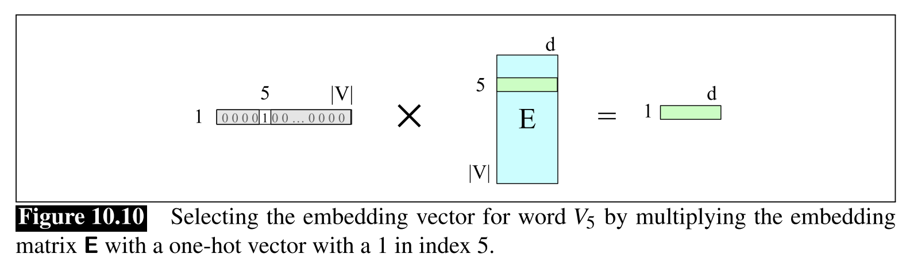
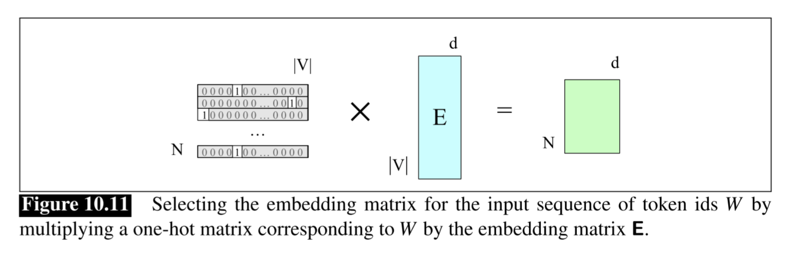
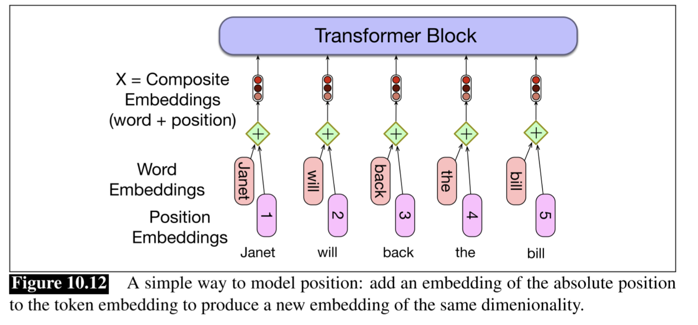
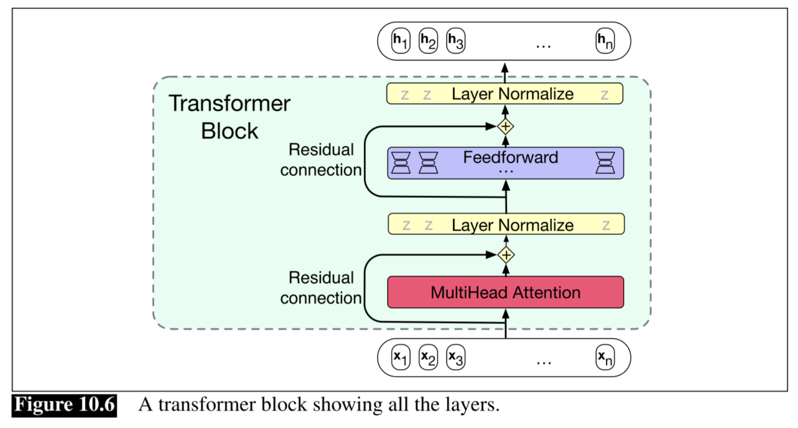
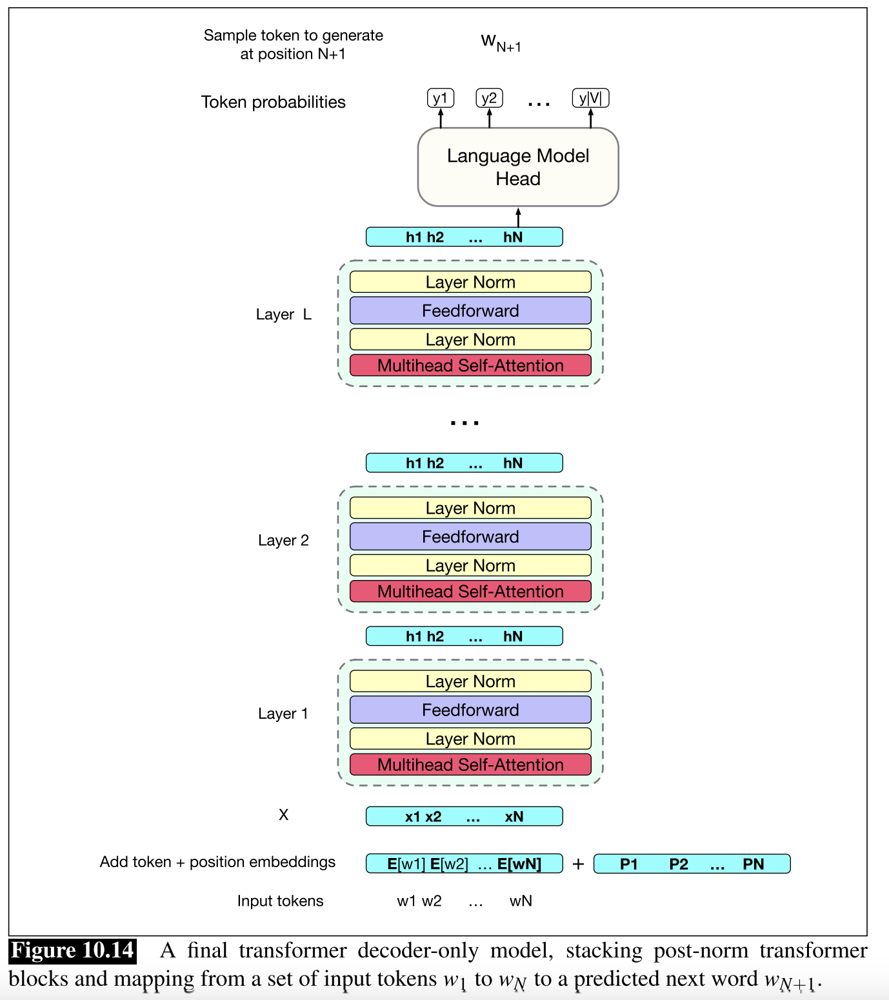

The thread: turn text into a classification problem we already know how to solve, then ask what kind of network can do it well — that network is the Transformer.
Language modelling as self-supervised next-token prediction
No labels? No problem — the data labels itself.
What is text, for a neural net?
Text becomes a list of vectors of length \(D\) (the embedding dimension).
list of \(T\) vectors, each of length \(D\) \(T\) = number of tokens, \(D\) = embedding dim
From now on I will mostly use “word” = “token” in examples, for simplicity.
Tokens and embeddings — details
Tokenisation. Modern tokenisers use Byte-Pair Encoding (BPE): start from individual bytes and iteratively merge the most frequent adjacent pairs into new vocabulary entries until the target size \(K\) is reached.
Common implementations: OpenAI’s tiktoken, Google’s SentencePiece, Hugging Face tokenizers.
Typical vocabulary size is in the range 32,000 to 200,000, a compromise between few-but-coarse and many-but-rare tokens.
BPE handles rare words gracefully: “supraluminal” gets split into known pieces like “supra”, “lum”, “inal”.
Embedding matrix. \(E\) has one row per token in the vocabulary, each a learnable \(D\)-dim vector:
\[ E \in \mathbb{R}^{K \times D}, \qquad \mathbf{e}_t = E[\,w_t\,]. \]
\(E\) is trained end-to-end with the rest of the network (see below).
After training, similar words tend to cluster semantically: \(\mathbf{e}_{\text{king}} - \mathbf{e}_{\text{man}} + \mathbf{e}_{\text{woman}} \approx \mathbf{e}_{\text{queen}}\) (classic example).
Typical embedding dimensions are 512 to 16,384. \(E\) alone accounts for \(K \cdot D\) parameters.
Tokenisation & embedding lookup
Tokenisation happens at the word, subword, or character level. Subword tokenisation is by far the most common in modern LLMs. On the same sentence:
Embedding lookup. One-hot a single token \((1 \times |V|)\) and multiply by the embedding matrix \(E \in \mathbb{R}^{|V| \times d}\) — a row lookup implemented as a matmul. Stack \(T\) one-hot rows into \(W\) and \(W E \in \mathbb{R}^{T \times d}\) is the sequence embedding \(X^{(0)}\) fed to the first Transformer block.

Single token — J&M Fig 10.10.

Whole sequence — J&M Fig 10.11.
How do you even train on text?
So far we had supervised pairs \((\mathbf{x}, y)\): image + class, data + parameters. But a text corpus is just… text.
Schrödinger'scatvisitsacaféin東京. billions of such sentences, and no labels at all.
The trick.Hide part of the sentence and ask the model to fill it in. The hidden piece acts as the label — the corpus labels itself.
Schrödinger'scatvisitsacaféin[ ? ]
→ predict
東京
This is self-supervised learning: the labels necessary for supervised learning are manufactured from the data itself.
Mask & predict = classification over the vocabulary
Language modelling is just classification — over a very large label set, with a carefully chosen architecture.
Pick a vocabulary \(V = \{w_1, \ldots, w_K\}\) of size \(K\). Given a context, predict which token fills the hole:
\[ q_\phi(w \mid \text{context}) \;=\; \mathrm{softmax}\big(f_\phi(\text{context})\big), \quad w \in V \]
Output is a probability distribution over every token in the vocabulary.
e.g. for “…café in [?]”:
東京0.22Paris0.15Amsterdam0.09London0.05⋮0.49
Same machinery as Lecture 5/6: logits → softmax → categorical distribution over \(V\); loss = cross-entropy / NLL \(\mathcal{L} = -\log q_\phi(w^\star \mid \text{context})\).
From next-token prediction to the sentence NLL
The chain rule of probability (the autoregressive factorisation) says that any joint distribution over a sentence factorises as a product of conditionals. Our classifier already provides exactly those conditionals, so we bootstrap a full generative model for free:
\[ p_\phi(w_1, w_2, \ldots, w_T) \;=\; \prod_{t=1}^{T} q_\phi(w_t \mid w_{<t}) \]
A single next-token distribution becomes a generative model over entire sentences.
Training loss = NLL of the whole sentence. Taking \(-\log\) of the factorisation turns the product into a sum:
Training = minimise this, averaged over the corpus. For free, every sentence of length \(T\) supplies \(T\) per-position mask-and-predict losses.
Tokens → vectors → matrix
Each token is mapped to a vector via a learned embedding lookup:
\(\ \mathbf{x}_t = E[w_t],\ \) with \(E \in \mathbb{R}^{|V| \times d}\). Stack \(T\) rows to get the input matrix \(X \in \mathbb{R}^{T \times d}\).
\(E\) is learned with the rest of the network; similar words end up with similar rows.
Typical sizes: \(|V|\!\sim\!10^{4\text{-}5}\), \(d\!\sim\!10^3\). The matrix \(E\) alone holds \(|V|\cdot d\) parameters — a substantial chunk of an LLM.
From here on, "input" = the matrix \(X\). The network's job is to produce a probability distribution at each of its \(T\) positions.
Implementation: predict the shifted sequence in one pass
Feed the whole sentence in and predict the next token at every position simultaneously. Position \(t\) sees only positions \(\leq t\) (causal).
Schrödinger's
cat
visits
a
café
in
tokens \(w_{1:T}\) (integers)
\(w_1\)
\(w_2\)
\(w_3\)
\(w_4\)
\(w_5\)
\(w_6\)
× E
× E
× E
× E
× E
× E
embed
\(\in \mathbb{R}^D\)
\(\in \mathbb{R}^D\)
\(\in \mathbb{R}^D\)
\(\in \mathbb{R}^D\)
\(\in \mathbb{R}^D\)
\(\in \mathbb{R}^D\)
shape \((T, D)\)
Transformer (causal) \((T,D)\to(T,D)\)
\(\in \mathbb{R}^D\)
\(\in \mathbb{R}^D\)
\(\in \mathbb{R}^D\)
\(\in \mathbb{R}^D\)
\(\in \mathbb{R}^D\)
\(\in \mathbb{R}^D\)
× E⊤
× E⊤
× E⊤
× E⊤
× E⊤
× E⊤
un-embed logits \((T, K)\)
softmax
softmax
softmax
softmax
softmax
softmax
\(q_\phi(w_2 \mid w_1)\)
\(q_\phi(w_3 \mid w_{<3})\)
\(q_\phi(w_4 \mid w_{<4})\)
\(q_\phi(w_5 \mid w_{<5})\)
\(q_\phi(w_6 \mid w_{<6})\)
\(q_\phi(w_7 \mid w_{<7})\)
conditional distributions
\(w_2\)
\(w_3\)
\(w_4\)
\(w_5\)
\(w_6\)
\(w_7\)
cat
visits
a
café
in
東京
target labels
Details & subtleties
First token has no context.
Strictly, \(q_\phi(w_t \mid w_{<t})\) is undefined for \(t = 1\) — there is no prefix to condition on. In practice LMs prepend a special <BOS> (beginning-of-sequence) token as \(w_0\), so every real token has a non-empty context and the factorisation becomes
\[ p_\phi(w_{1:T} \mid \texttt{<BOS>}) = \prod_{t=1}^{T} q_\phi(w_t \mid \texttt{<BOS>}, w_{<t}). \]
A word on the name.
We call this a causal transformer block because the output at position \(t\) depends only on inputs at positions \(\leq t\) — a prefix-only dependency. Note that “causal” here is jargon for this temporal masking, not statistical causality. In the literature you’ll also see the same object called a decoder-only transformer block — a historical name inherited from the original encoder–decoder architecture used for machine translation. For a pure language model there is nothing to “decode from”, so we’ll just say causal transformer block.
Transformer = stack of Transformer blocks
The Transformer on the previous slide is a stack of \(L\) identical Transformer blocks. Each block is itself prefix-only (output at \(t\) depends only on input at positions \(\leq t\)) and preserves shape \((T, d) \to (T, d)\). Stacking prefix-only maps gives a prefix-only network.
Transformer (causal)
=
123456
\(L\) × Causal transformer blocks
\(L\) stacked → the full Transformer
Click an output position to trace its dependence cone through the stack.
Inside the Transformer block
Self-attention, multi-head, and the \((T, D) \to (T, D)\) recipe.
First try — why not a masked causal convolution?
We need a shape-preserving map \((T,D)\to(T,D)\) that respects causality. The most familiar candidate: a 1D causal convolution — a CNN-style kernel that slides along the sequence and looks only to the left.
inputs \(\mathbf{x}_{1:T}\)
x₁
x₂
x₃
x₄
x₅
x₆
x₇
x₈
↓
↓
↓
↓
↓
kernel \(\mathbf{w}\)
\(w_{-2}\)
\(w_{-1}\)
\(w_{0}\)
\(w_{+1}\)
\(w_{+2}\)
↓
output \(\mathbf{y}_i\)
\(\mathbf{y}_5\)
A 1D conv kernel of width 5 over position \(i=5\). The three blue weights mix “now” and “past”; the two greyed-out weights would reach into the future — we set them to zero by hand to make the conv causal.
Range. Stacking convs grows the receptive field only linearly in depth, but text has references that jump tens or hundreds of tokens.
No geometric structure. In images information is structured locally, but in text adjacency is a poor proxy for relevance (e.g., a variable declared at the top of a script and used 300 lines later).
We need a block that reaches anywhere in the past and routes by content, not by position. → attention.
Attention as retrieval
Each token \(j\) carries a key \(\mathbf{k}_j\) (what it is) and a value \(\mathbf{v}_j\) (what it contributes). A query \(\mathbf{q}\) — the question — picks values by key alignment; the weighted sum \(\mathbf{a}\) is the derived answer:
Toy example below: \(\mathbf{q} \in \mathbb{R}^2\) — its angle picks what to ask (name, location, or a blend); its length sharpens or flattens the softmax.
Click a preset above, or drag \(\theta\) and \(|q|\).
Setup — what each symbol means
Keys \(\mathbf{k}_j\) (dim 2). Type tags. Axes: “location-like” and “name-like”. Café and 東京 get \((1,0)\); Schrödinger gets \((0,1)\); grammatical fillers get \((0,0)\).
Values \(\mathbf{v}_j\) (dim 3). Payloads returned on a match. One axis per identity: Schrödinger, café, 東京. Fillers return the zero vector.
Query \(\mathbf{q}\) (dim 2). Asked from outside the sentence — nothing in the sentence constructs it. In real self-attention each token will build its own query from its own embedding; the external-query setup is the simplest starting point.
Why softmax? The raw scores \(\mathbf{q}\cdot \mathbf{k}_j\) can take any real value. Softmax turns them into non-negative weights summing to 1 — a proper distribution over keys. A large \(|\mathbf{q}|\) peaks the distribution on the best match; a small \(|\mathbf{q}|\) flattens it. Same knob as the \(1/\sqrt{d_k}\) scaling we'll meet later.
From external query to self-attention
In the toy, \(\mathbf{q}\) came from outside and the keys and values were hand-picked. In self-attention, every \(\mathbf{q}\), \(\mathbf{k}\), \(\mathbf{v}\) is built from the token itself by three learned projections shared across positions:
\(\mathbf{x}_j \in \mathbb{R}^d\) is the \(j\)-th token embedding (content + position, see previous section).
\(W^Q, W^K \in \mathbb{R}^{d \times d_k}\) and \(W^V \in \mathbb{R}^{d \times d_v}\) are learned, shared across all positions.
Scoring and mixing are unchanged: \(s_{ij} = \mathbf{q}_i\!\cdot\!\mathbf{k}_j\), \(\ \alpha_{ij} = \dfrac{e^{s_{ij}}}{\sum_l e^{s_{il}}}\), \(\ \mathbf{a}_i = \sum_j \alpha_{ij}\mathbf{v}_j\).
Every token now plays three roles at once — it asks a question \(\mathbf{q}_j\), offers a key \(\mathbf{k}_j\) to be matched against, and carries a value \(\mathbf{v}_j\) to be retrieved. The "meaning" of these three roles isn't hard-coded — it's whatever \(W^Q, W^K, W^V\) discover during training.
Row convention. We treat \(\mathbf{x}_j\) as a row vector of length \(d\); weight matrices act on the right (\(\mathbf{q}_j = \mathbf{x}_j W^Q\)). Stacking rows gives the matrix form \(Q = X W^Q\) we'll use next. Standard for Transformer implementations (PyTorch, Jurafsky & Martin, Vaswani 2017).
Softmax reminder. For a vector of scores \(\mathbf{z}\), \(\ \mathrm{softmax}(\mathbf{z})_j = e^{z_j}/\sum_l e^{z_l}\) — turns real-valued scores into a probability distribution (all \(\geq 0\), sum to \(1\)).
Self-attention in action: building up the \(\alpha_{ij}\) matrix
Pick random \(\mathbf{x}_j \in \mathbb{R}^2\) and random \(2\times 2\) weight matrices \(W^Q, W^K, W^V\). Each output \(\mathbf{a}_i\) is the softmax-weighted mean of the \(\mathbf{v}_j\)'s — one row \(\alpha_{i,\cdot}\) of weights per output position. Full self-attention = the whole matrix \(\alpha_{ij}\).
Current row: i = —
Next first reveals the projections one at a time (\(\mathbf{q}_j\), then \(\mathbf{k}_j\), then \(\mathbf{v}_j\)). Then for each output position \(i\) it advances in two half-steps: the \(\alpha_{i,\cdot}\) row fills (green shading; uniform \(\mathbf{q}_i\!\to\!\mathbf{k}_j\) lines), then \(\mathbf{a}_i = \sum_j \alpha_{ij}\mathbf{v}_j\) is assembled (red lines weighted by \(\alpha\)). Toggle causal mask to set \(s_{ij}\!\to\!-\infty\) for \(j>i\) — we'll come back to why on the next slide.
Causal masking: what the toggle on the previous slide was
Why? We train on next-token prediction: position \(i\) must predict \(w_{i+1}\). If attention at \(i\) could peek at \(j > i\), the label leaks into the input and the loss goes to zero for the wrong reason. So attention must be causal — output at \(i\) sees only positions \(j \leq i\).
How. Form \(S = QK^\top/\sqrt{d_k}\). Add a causal mask
\[ M_{ij} = \begin{cases} 0 & j \leq i \\ -\infty & j > i \end{cases} \]
and softmax row-wise:
\[ \alpha = \mathrm{softmax}(S + M). \]
Softmax sends \(-\infty\) to zero — future positions contribute nothing.
Left: the mask \(M\). Right: the result \(\alpha = \mathrm{softmax}(S + M)\) — upper triangle exactly zero, each row a proper distribution over \(j \leq i\). This is exactly the per-row zeroing you just toggled on and off.
Self-attention: the 6-step compute graph for \(\mathbf{a}_i\)
Zoom into a single output \(\mathbf{a}_i\): three input vectors at the top, weighted sum at the bottom. Orange column = the query path for the current \(i\). Click Next i to step \(i = 1 \to 2 \to 3\); columns with \(j > i\) are faded out by the causal mask.
Current: i = 1
Parallelising self-attention
GPUs do matrix multiplies, not Python for-loops. Everything we've done — projections, scores, softmax, weighted sums — collapses into three matmuls and one masked softmax, all \(T\) positions at once. Stack the token embeddings into \(X \in \mathbb{R}^{T \times d}\):
\( Q = X W^Q,\qquad K = X W^K,\qquad V = X W^V \) with \(Q, K \in \mathbb{R}^{T \times d_k}\), \(V \in \mathbb{R}^{T \times d_v}\).
Parallel attention.
\[ A \;=\; \mathrm{softmax}\!\left( \frac{Q K^\top}{\sqrt{d_k}} + M \right) V \;\in\; \mathbb{R}^{T \times d_v}. \]
Softmax is row-wise — each row is an independent distribution over keys. \(M\) is the causal mask from the previous slide.
Shapes at each step:
inputs \(X : T \times d\)
projections \(Q, K : T \times d_k\), \(\;V : T \times d_v\)
scores \(QK^\top : T \times T\)
output \(A : T \times d_v\) — row \(i\) is \(\mathbf{a}_i\)
No loop over \(i\) anywhere — that's what made Transformers trainable at scale.
Multihead self-attention
A single attention layer computes one kind of alignment between queries and keys. But language has many co-existing structures — syntactic agreement, co-reference, position, semantic type. Running \(h\) heads in parallel — each with its own \((W^Q, W^K, W^V)\) — lets the layer look up different kinds of things at once.
Each head produces an \(N\times d_v\) output; the \(h\) outputs are concatenated to \(N\times hd_v\) and mixed by \(W^O \in \mathbb{R}^{hd_v \times d}\) back to \(N\times d\). Shape-preserving — so we can stack.
Multihead self-attention — the equations
For \(h\) heads indexed by \(m = 1, \dots, h\) (GPT-3 used \(h=96\); the diagram shows \(h=4\)). We reserve \(i\) for the query/output position — \(m\) is the head.
Per-head, then concatenate + mix. Each head has its own \(W^Q_m, W^K_m, W^V_m\); a shared output projection \(W^O\) re-mixes them.
\[ \mathrm{head}_m = \mathrm{softmax}\!\left(\tfrac{Q_m K_m^\top}{\sqrt{d_k}} + M\right) V_m \in \mathbb{R}^{T \times d_v}, \qquad \mathrm{MH}(X) = \mathrm{concat}(\mathrm{head}_1, \dots, \mathrm{head}_h)\, W^O, \]
with \(W^O \in \mathbb{R}^{h d_v \times d}\). Input shape \(T \times d\) maps to output shape \(T \times d\) — ready to stack.
Typical numbers:
\(d = h \cdot d_v\) and \(d_k = d_v\) — the model dim \(d\) is split evenly across \(h\) heads.
Compute per token scales as \(h \cdot d_v^2 = d \cdot d_v\) — total budget is set by \(d\), not by \(h\).
Adding heads doesn't blow up the parameter count — it splits the same budget into more, narrower views.
Positional information
Nothing in the attention formulas depends on the index \(t\): self-attention is permutation-equivariant — shuffle the tokens and the outputs shuffle the same way. We must inject order explicitly.
Simplest recipe: add a position embedding to the token embedding,
\(\;\mathbf{x}_t = \mathbf{e}_{w_t} + \mathbf{p}_t\).
Absolute. Learn one embedding per position \(p = 1, \dots, T_\text{max}\). Simple, but over-represents early positions.
Sinusoidal. Fixed \(\sin/\cos\) at geometrically spaced frequencies (original Transformer). No added params; extrapolates better.
Rotary (RoPE). Split Q and K into 2-D pairs and rotate each pair by an angle \(\propto\) the token's position (many frequencies). The dot product \(\mathbf{q}_i\!\cdot\!\mathbf{k}_j\) then depends only on \(i\!-\!j\) — pure relative position. Modern-LLM default.

Source: Jurafsky & Martin, Fig. 10.12.
Layer norm
Without normalisation, activation magnitudes drift as they pass through dozens of transformer blocks — gradients explode or vanish and training stalls. Layer norm keeps each hidden vector at unit scale, computed per token (not across the batch: sequence length and batch composition vary, and at inference the batch is often just 1).
Recipe. For each token's hidden vector \(\mathbf{h} \in \mathbb{R}^d\), compute its own statistics:
\[ \mu = \frac{1}{d}\sum_{k=1}^{d} h_k, \qquad \sigma^2 = \frac{1}{d}\sum_{k=1}^{d} (h_k - \mu)^2, \]
then normalise and apply learnable affine parameters \(\gamma, \beta \in \mathbb{R}^d\):
\[ \mathrm{LN}(\mathbf{h}) = \gamma \odot \frac{\mathbf{h} - \mu}{\sqrt{\sigma^2 + \varepsilon}} + \beta. \]
Where in the block? Two layer norms per transformer block. The original 2017 Transformer used post-norm (LN after the residual add); modern models use pre-norm (LN before each sub-layer, inside the residual branch) — more stable for deep stacks.
Transformer block
Everything we just built assembled into the repeated unit: two mixers (attention across positions, MLP across features) wrapped in two plumbing pieces (layer norm, residuals).

Source: Jurafsky & Martin, Fig. 10.6.
Two types of mixing:
Multihead attention — mixes across positions (tokens talk to each other): \((T,d)\!\to\!(T,d)\).
Feedforward (MLP) — mixes across features, per token: \(\mathbb{R}^d\!\to\!\mathbb{R}^d\), typically \(d\!\to\!4d\!\to\!d\) with GELU.
Two types of plumbing:
Layer norm — one before each sub-layer; stabilises the hidden-state distribution.
Residuals — \(\mathbf{x}\!\mapsto\!\mathbf{x}+\mathrm{sublayer}(\mathrm{LN}(\mathbf{x}))\); essential for training deep stacks.
The whole block in one line. Shape-preserving map \(\mathcal{T}: \mathbb{R}^{T \times d} \to \mathbb{R}^{T \times d}\):
\[ X_2 = X + \mathrm{MH}(\mathrm{LN}_1(X)), \qquad \mathcal{T}(X) = X_2 + \mathrm{FFN}(\mathrm{LN}_2(X_2)). \]
Stack \(L\) of them: \(X^{(\ell+1)} = \mathcal{T}^{(\ell)}(X^{(\ell)})\) — alternating position-mixing (attention) and feature-mixing (MLP) is what makes the Transformer expressive.
Final transformer architecture
End-to-end: tokens in at the bottom, a full probability distribution over the next token at every position at the top. One forward pass yields \(T\) predictions — that's what we'll train on next. One at a time is also how we generate.

A decoder-only transformer language model. Source: Jurafsky & Martin, Fig. 10.14.
LM head. Final hidden vectors projected to \(|V|\) logits (typically tied to \(E^\top\)). Softmax → token probabilities.
Use. Sample \(w_{T+1}\) from the distribution at position \(T\) (greedy / top-\(k\) / top-\(p\) / temperature — next section). Or multiply probabilities along a text to score it.
Training & sampling LLMs
Data, SGD, the three stages that turn a text completer into an assistant — and how we generate.
Training corpora for LLMs
“A huge text corpus” — let's put numbers on it. Canonical example: GPT-3's training mix. Newer models use similar ingredients in similar proportions, just far more of each.
Common Crawl — periodic snapshots of the public web (FAQs, docs, Stack Overflow-like Q&A, tutorials, forums, news). GPT-3: \(\sim\)500 B tokens.
Books — scanned / OCR'd fiction and non-fiction; long-form, coherent narrative. GPT-3: \(\sim\)67 B tokens.
Wikipedia — encyclopedic articles; factual, structured, multilingual. GPT-3: \(\sim\)3 B tokens.
Why it “just works” for NLP tasks. A web-scale corpus incidentally contains enormous numbers of examples of translation (parallel text), Q&A, sentiment-labelled reviews, summarisation (headline + article), code, mathematics, etc. Next-token prediction over this mix is a covert multi-task learner.
Modern scale. Frontier models now train on trillions of tokens, typically after aggressive deduplication and quality filtering. The curated mix matters as much as the total size.
How is this trained?
Same recipe as every other neural network we’ve seen — just very big, and with a corpus instead of a labelled dataset.
Data. A huge text corpus (web, books, code). Chop into fixed-length sequences of \(T\) tokens each. No human labelling — every token is a free training target.
Loss. For each minibatch of \(B\) sequences, sum the per-position NLL over all \(B \cdot T\) predictions in one forward pass:
\[ \mathcal{L}(\phi) \;=\; -\frac{1}{B\,T}\sum_{b=1}^{B}\sum_{t=1}^{T} \log q_\phi\!\big(w_{t+1}^{(b)} \mid w_{\leq t}^{(b)}\big). \]
Optimiser. AdamW, linear warm-up + cosine decay, long training runs (104–106 steps). Gradient clipping, mixed precision (bf16/fp16) for throughput.
Evaluation. On held-out text, report perplexity \(= \exp(\text{avg NLL})\). Lower = better next-token guesser. Downstream benchmarks come later.
Nothing about the training loop is special to language — it’s SGD on a self-supervised classification loss.
From base model to assistant — three training stages
What we just described gets you a base model: a text completer. Useful LLMs (ChatGPT, Claude, Gemini, …) add two more stages on top. Same transformer throughout — only the data changes, and in stage 3 the loss changes too.
1. Pretraining.
Next-token prediction on web + books + code.
\(\sim 10^{12}\)–\(10^{13}\) tokens
self-supervised, no labels
> 99% of the total compute
Output: base model — plausible text continuation, but doesn't reliably follow instructions.
2. Supervised fine-tuning (SFT).
Same cross-entropy loss, but on curated (prompt, ideal response) pairs written by humans.
\(\sim 10^{4}\)–\(10^{6}\) examples
instruction & chat format
just another fine-tune pass
Output: instruction-following assistant.
3. RLHF — reinforcement learning from human feedback.
Humans rank pairs of model responses; a reward model is trained to predict human preference; the LLM is then updated (e.g. PPO) to maximise this reward.
\(\sim 10^{4}\)–\(10^{5}\) preference pairs
optimises for helpful, harmless, honest
Output: safe, usable assistant.
Data shrinks by \(\sim 10^{7}\) from stage 1 to stage 3; compute stays dominated by pretraining. Stages 2–3 turn a plausible-text machine into a useful tool.
How is this sampled from?
Once trained, we use the model autoregressively: one token at a time, appending each sample to the context.
The loop. Given prompt \(w_1, \ldots, w_k\):
Forward pass through the network → logits at position \(k\).
Softmax → distribution \(q_\phi(\cdot \mid w_{\leq k})\).
Sample \(w_{k+1}\) from this distribution (or pick the argmax).
Append \(w_{k+1}\) to the context, set \(k \leftarrow k+1\), repeat.
Shaping the distribution.
Temperature \(\tau\): rescale logits \(\mathbf{z} \to \mathbf{z}/\tau\). Small \(\tau\) → peaky (deterministic); large \(\tau\) → flat (creative).
Top-\(k\) / top-\(p\): truncate to the \(k\) (or cumulative probability \(p\)) most likely tokens before sampling. Kills long-tail noise.
Why it's expensive. Each new token needs a fresh forward pass. Standard trick: KV-cache — save intermediate activations for previous positions so each step only processes the new token. Turns generation from \(O(T^2)\) to \(O(T)\).
Stopping. An end-of-text token gets sampled, or we hit a length limit. Generation is just “classify the next token” in a loop.
Summary
1. Language modelling
Next-token prediction = classification over \(|V|\). Chain rule of probability turns one classifier into a generative model over sentences.
SGD on cross-entropy over trillions of tokens. Pretrain → SFT → RLHF turn a plausible-text machine into an assistant.
The red thread. Every piece — tokenisation, embeddings + position, attention, multihead, layer norm, residuals — exists to make next-token classification a learnable problem that can be minimised with plain SGD at web scale.
Further reading: Jurafsky & Martin, Speech and Language Processing, ch. 10; Vaswani et al. 2017 (“Attention is all you need”); Elhage et al. 2021 (mathematical framework for Transformer circuits); Ouyang et al. 2022 (InstructGPT / RLHF).
Backup
Attention in the wild: what real heads look like
Stacking \(L\) blocks lets information take \(L\) content-dependent hops — but what do the heads actually learn in practice? Most heads in a trained Transformer are hard to interpret, but some specialise in recognisable patterns.
BertViz (Jesse Vig, 2019) is the standard interactive tool: real attention weights shown as curved lines between tokens, per head, per layer. — github.com/jessevig/bertviz
Recurring head archetypes (Clark et al., 2019):
Previous-token heads: each position attends one step back.
Delimiter heads: everything attends to [CLS], [SEP], or periods.
Coreference heads: pronouns attend to their antecedents — the “it” story, learned.
Health warning — attention is not explanation. Most heads are not cleanly interpretable; attention weights measure how information flows, not necessarily how the model decides. Don't read a single heatmap and declare victory. (Jain & Wallace, 2019; Serrano & Smith, 2019.)
Demo live in class. Full references on the course page.